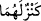

“Ve Rabbinden bir rahmet olarak” duvarın altından “hazînelerini çıkarsınlar.” Eğer
ben duvarı onarmasaydım, duvar yıkılır, onlar malı muhâfaza ve artırmaya muktedir
olmadan önce altındaki hazîne çıkar ve mal tamamen zâyî olurdu.
Eğer “İki yetimden biri ve onların bakımını üzerine alan kimse hazineyi biliyor
olsaydı, duvarı yıkılmaya terk etmesi imkansız olurdu. Eğer hazîneyi bilmiyor idiyseler,
hazineyi çıkarmaları onlar için nasıl kolay olur?” denilirse, buna şöyle cevap veririz:
Belki yetimler bilmiyorlardı da onların bakımını üstlenen kimse biliyordu. Ancak o da
orada değildi. İmam (Râzî)’nin tefsîrinde böyle geçmektedir.
Fakir (Bursevî) der ki: “Onlar bilmiyor idiyseler..” sözü kabul edilemez. Çünkü
Allah Teâlâ, her hangi bir yolla onlara bu hazînenin yerini bildirmeye ve onlara
çıkarmayı kolaylaştırmaya kâdirdir. Nitekim daha önce yerini bilmeden define bulan
kimseler nâdir değildir. “daki lâm harfi, bulmanın bu iki yetime tahsisi içindir.
Yedinci dedenin altıncı batından çocukları doğuncaya kadar yaşaması ve onun için mal
gömmesi veya ona tahsis etmesi uzak bir ihtimaldir.
Ey Mûsâ! “Ben bunları” gördüğün geminin delinmesi, çocuğun öldürülmesi ve
duvarın onarılması işlerini “kendiliğimden” kendi görüşüm ve ictihâdım olarak
“yapmadım.” Ancak Allah’ın emri ve vahyi ile yaptım.
İşte bu Mûsâ (a.s.)’a müşkil görünen şeyin îzahıdır. Zâhirde münker görünen fiili için
mâzeret beyanıdır. İşte irşad isteyen kimseye merhamet ve şefkat için ondaki şüphe ve
tereddütleri izâle konusunda mürşid ile müşterşid irşad edilmek isteyen arasında usûl
budur.
“İşte, hakkında sabredemediğin şeylerin iç yüzü budur.” Bu, Hızır (a.s.)’ın daha
önceki vaadinin yerine getirilmesidir.
Rivâyet edilmiştir ki Mûsâ (a.s.) ondan ayrılmak isteyince, Hızır (a.s.) ona: “Eğer
sabretseydin gördüklerinden çok daha hayret verici işler yapardım.” dedi.
Mûsâ (a.s.) ayrılırken ağladı ve:
“Ey Allah’ın nebîsi! Bana tavsiyede bulun.” dedi.
Hızır (a.s.) da şöyle dedi:
“İlmi, insanlara anlatmak için öğrenme, amel etmek için öğren. Çünkü ilmi ile amel
etmeyenin konuşması, kendisine bir fayda sağlamaz, yararı başkasınadır.”
Mesnevî’de şöyle der:
Yakup, Yusuf ’a acıkmıştı; özlemişti,
Ekmek kokusu ona ta uzaklardan gelmekteydi.
Halbuki Yusuf ’un gömleğini alıp koşa koşa Yakub’a getiren
O gömleğin kokusunu duymadı bile!
Aradaki mesâfe yüzlerce fersahken Yakub, Yakub olduğundan
Yusuf ’un gömleğinin kokusunu duyuyordu.